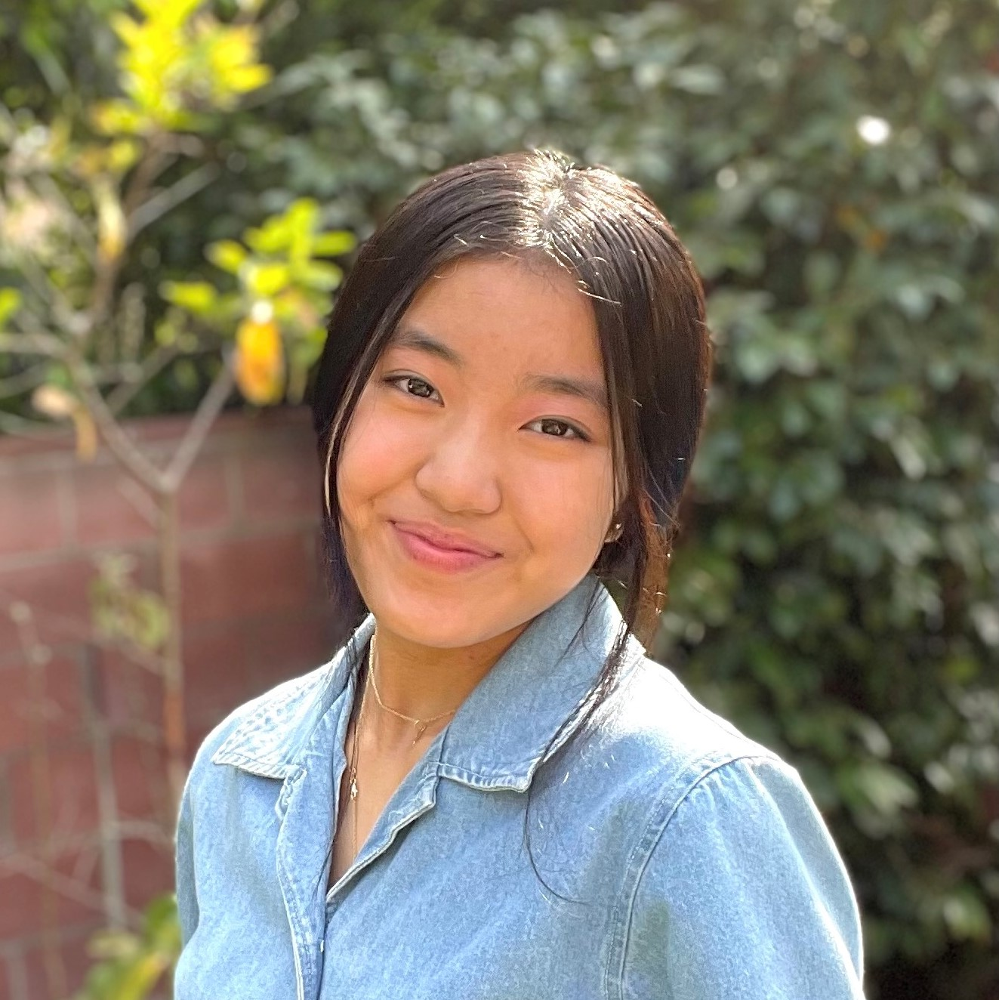

Meet the Founder
Hi! My name is Joy Cheng. I am an undergraduate student at UCLA studying computer science.
The Story Behind Math Adventures
I first developed a passion for math in fourth grade when I joined the Olga Radko Endowed Math Circle, where I was introduced to a variety of cool math topics I had never seen before. Since then, I've wanted to help inspire a love for math in kids by giving them the chance to discover firsthand some of the wonderful and surprising ways in which math presents itself in the world. I founded Math Adventures in hopes of providing elementary school students with the opportunity to explore different areas of math at an early age and to adopt a mindset of curiosity toward math, regardless of whether or not they have any background knowledge on the subject.
Starting in November 2019, I worked on developing an engaging curriculum that would introduce students to a new mathematical topic every week. I chose to highlight the topics that I had found most interesting, exciting, and unusual as an elementary school student, including graph theory, Möbius strips, and the golden ratio. I wanted to make my classes as discovery-oriented and hands-on as possible; my goal was to let the kids find patterns and make connections on their own to come up with formulas and rules in math.
After numerous meetings and email conversations with Windward School faculty members as well as parents and administrators at local public elementary schools, we decided that the Math Adventures pilot program would take place after school at Windward on five Thursdays from February 6 to March 12, 2020. I reached out to some of my friends and gathered a handful of amazing mentors that volunteered to help out with the lessons. Sadly, we were only able to teach four out of the five sessions because school closed the day before the last session due to the COVID-19 outbreak. However, that didn't stop us; we adapted to remote learning and finished the course online. To connect with the students and make the course accessible in a virtual world, I assembled and distributed take-home kits with worksheet binders and project tools. The Math Adventures website was born.
Since then, my friends and I have taught many other online courses over Zoom and have expanded the program beyond Los Angeles to across the United States! Highlights include holding a course specifically for girls to empower them to pursue math and partnering with Leaders United for Change to increase our impact. Even when we're not teaching, the Math Adventures online curriculum continues to reach students nationwide!
Special Thanks to...
- Ashley Goodman
- Mike Fox-Boyd
- Cat Benner
- Emily Fuller
- Sammy Motzkin
- Eli Motzkin
- Elliot Bobrow
- Alondra Cardenas
- Mitch Brodie
- Veronica Cope
- Erin Goldenberg
- Sofia Borin
- Ava Weyland
- Olga Radko Endowed Math Circle
- Windward School
Without you, this program wouldn't have been possible!
In Memory of Dr. Olga Radko
Dr. Olga Radko, founder and 13-year director of the Olga Radko Endowed Math Circle (previously Los Angeles Math Circle), passed away on June 29, 2020 after several years battling cancer. She is deeply missed, and her legacy will live on forever in the hearts of the countless people and students whom she inspired and educated. Through her leadership of the Math Circle as well as her co-authorship of the two books Breaking Numbers into Parts, she has influenced so many young people to appreciate and explore the beauty of math and to share it with others in their communities. It is not an exaggeration to say that she truly changed my life and attitude toward mathematics, and that her encouragement and enthusiasm sowed the seeds of Math Adventures and so many other satellite math programs throughout Los Angeles. Thank you, Dr. Radko, for giving me and countless others these wonderful opportunities to learn and grow, and for all of your support over the past seven years. You are the reason we love math today.